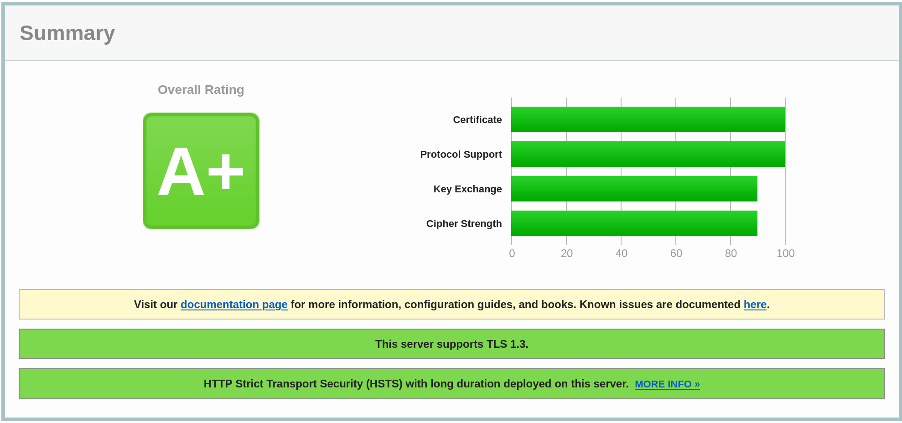

[3/5] Self hosted Nextcloud 20+
See also
💾 This part deals with the installation of Nextcloud itself, now that we have a minimal install + a strong filesystem to support it. Expect it to last years with minimal maintenance (mainly major releases to major releases updates) as it should be. Set it and forget it! 🏋️
⚠️ Temporarily deactivate overlayroot first as we will need to write access to `/`: PART 5: deactivate read only root, otherwise your configuration will be lost at next reboot!
Installing MariaDB
We need to install MariaDB before Nextcloud as the latter will ask to which DB we want it to connect to.
I assume we will connect and external hard drive and install MariaDB + Nextcloud on it (at least their data files). Assuming drive is mounted in /media/data hereafter.
sudo mkdir /media/data
sudo chown -R sheeva:sheeva /media/data
sudo mount -t ext4 /dev/disk/by-uuid/XXXXXXXX-XXXX-XXXX-XXXX-XXXXXXXXXXXX /media/data/
# For a permanent mount at boot time, edit /etc/fstab :
# UUID=XXXXXXXX-XXXX-XXXX-XXXX-XXXXXXXXXXXX /media/data/ ext4 defaults 0 2
We can now install MariaDB, specifying that the data files will be in a specific folder in /media/data:
# Installing packages
sudo apt install mariadb-server mariadb-client
# Stopping the service
sudo service mysql stop
# Moving datadir directory to external hard drive
mkdir -p /media/data/mysql/datadir
sudo rsync -av /var/lib/mysql/ /media/data/mysql/datadir # rsync to keep files creation dates
sudo chgrp -R mysql /media/data/mysql
# Update datadir in config
# datadir = /media/data/mysql/datadir
sudo vim /etc/mysql/mariadb.conf.d/50-server.cnf # → update datadir line
# Add permissions for MariaDB to start sockets
# See: https://support.plesk.com/hc/en-us/articles/213918525-MySQL-does-not-start-Bind-on-unix-socket-Permission-denied
# at 2 places, group is 'root' instead of 'mysql'
sudo chgrp mysql /var/run/mysqld/
sudo chgrp mysql /media/data/mysql/datadir/mysql/
# Restart mariadb service
sudo service mariadb start
# Secure installation
sudo mysql_secure_installation # will ask questions
# Move the original config file so that
# we are sure we are not using it anymore
sudo mv /var/lib/mysql /var/lib/mysql-old
Make sure the service is started at boot:
sudo systemctl is-enabled mysql.service # outputs enabled/disabled
sudo systemctl disable mysql.service
sudo systemctl enable mariadb.service
Accessing MySQL content via command line interface is done via the following command:
sudo mysql -u root -p # password will be asked dynamically
It might be possible that your Debian installation configures unix_socket authentication by default, meaning root user can log in without password (same for $USER via sudo). This means it’s impossible to connect to MariaDB’s cli via mysql -u root -p command, the password option is ignored. One can see it as a warning is logged in MariaDB’s logs:
sudo tail /var/log/mysql/error.log
# [...]
# 2018-10-27 18:23:31 3063459840 [Warning] 'user' entry 'root@localhost' has both a password and an authentication plugin specified. The password will be ignored.
# [...]
Source: MariaDB Ubuntu root login
Source: Relocate Datadir folder
Installing Nextcloud
Creating Nextcloud user
sudo mysql -u root
MariaDB [(none)]> CREATE USER 'nextcloud_user'@'localhost';
# Query OK, 0 rows affected (0.00 sec)
MariaDB [(none)]> GRANT ALL PRIVILEGES ON nextcloud.* To 'nextcloud_user'@'localhost' IDENTIFIED BY '$YOURPASSWORD';
# Query OK, 0 rows affected (0.00 sec)
MariaDB [(none)]> exit
Installing Nextcloud required packages
The procedure is quiet straightforward as written in the doc.
Needed packages:
# Essentials:
sudo apt install apache2 php7.3/stable php7.3-gd/stable php7.3-xml/stable php7.3-mbstring/stable php7.3-zip/stable php7.3-curl/stable php7.3-json/stable libxml2
# Specifics:
sudo apt install php7.3-mysql # MySQL / MariaDB Connector
sudo apt install php-apcu # Local cache → https://docs.nextcloud.com/server/latest/admin_manual/configuration_server/caching_configuration.html
# Higly recommended
# PHP module bz2 (recommended, required for extraction of apps)
# PHP module intl (increases language translation performance and fixes sorting of non-ASCII characters)
# php-imagick otherwise NextCloud security check overview complains
sudo apt install php7.3-bz2/stable php7.3-intl/stable php-imagick/stable php-gmp/stable php-bcmath/stable ssl-cert
⚠ Don’t forget to configure cache in nextcloud’s config (APCU cache Doc), see below.
⚠ No need to install mod_webdav module as Nextcloud now includes a webdav server itself (see last paragraph of this section).
Source: Nextcloud command line installation
Creating a Nextcloud data folder
Folder must be writable to user www-data.
mkdir /media/data/nextcloud /media/data/nextcloud_tmp_dir
sudo chmod 0770 /media/data/nextcloud /media/data/nextcloud_tmp_dir
sudo apt install acl
setfacl -m u:www-data:rwx /media/data/nextcloud
setfacl -m u:www-data:rwx /media/data/nextcloud_tmp_dir
Downloading latest Nextcloud archive
There is unfortunately no official PPA for Debian, one must download a .zip archive from Nextcloud homepage. Upgrades are done via a Nextcloud app (Updater App).
cd /tmp
# NextCloud
curl -L -O https://download.nextcloud.com/server/releases/nextcloud-21.0.4.zip
# SHA256
curl -L -O https://download.nextcloud.com/server/releases/nextcloud-21.0.4.zip.sha256
# Check download OK :
sha256sum -c nextcloud-21.0.0.sha256 < nextcloud-21.0.0.zip
# nextcloud-21.0.0.zip: OK
Launching Nextcloud installer
unzip nextcloud-21.0.4.zip
sudo mv nextcloud /var/www/
sudo chown -R www-data:www-data /var/www/nextcloud
sudo chmod 0770 /var/www/nextcloud
sudo chmod 0770 /media/data/nextcloud/
# See: https://docs.nextcloud.com/server/latest/admin_manual/installation/command_line_installation.html
# Launch Nextcloud install script via the following command :
# Adapt $DATABASE_PWD, $ADMIN_LOGIN and $ADMIN_PWD accordingly
su root
cd /var/www/nextcloud
sudo -u www-data php occ maintenance:install --database "mysql" --database-name "nextcloud" --database-user "nextcloud_user" --database-pass "$DATABASE_PWD" --admin-user "$ADMIN_LOGIN" --admin-pass "$ADMIN_PWD" --data-dir "/media/data/nextcloud"
exit
# Nextcloud was successfully installed
# If you encounter the following error:
# "Username is invalid because files already exist for this user"
# Problem is documented here: https://github.com/nextcloud/server/blob/master/lib/private/User/Manager.php#L630
# You unfortunately need to delete /media/data/nextcloud/ 's content, otherwise installer find some files and considers admin user already exist. There is probably a cleaner way to do this but I assume this is a fresh install. 😇
Yeah 😎!
Installing and Configuring Nginx
- Keep in mind this is a starting point, you should know what you are doing. See Nextcloud documentation for more information.
- Don’t forget to replace
$YOUR_DOMAIN_NAMEby your domain name in the configuration given below. - See the line
listen 443 ssl http2;? You’ll be serving HTTP/2 requests! - This will give you an A+ score at SSL Labs. It needs a Let’s Encrypt SSL Certificate generation, covered in Part 4.
-
I’ve replaced the SSL Certificates path with
/path/to/XXXfor now. SSL Labs Test Score: A+
# Installing Nginx
sudo apt install nginx php-fpm
sudo nginx -v # gives you the installed version
# Removing default website
sudo rm /etc/nginx/sites-available/default /etc/nginx/sites-enabled/default
Create a new config file via sudo vim /etc/nginx/sites-available/nextcloud.conf and paste the content below.
upstream php-handler {
# server 127.0.0.1:9000;
server unix:/var/run/php/php7.3-fpm.sock;
}
server {
listen 80;
listen [::]:80;
server_name $YOUR_DOMAIN_NAME;
# enforce https
return 301 https://$server_name:444$request_uri;
}
server {
listen 443 ssl http2;
listen [::]:443 ssl http2;
server_name $YOUR_DOMAIN_NAME;
# TLS CONFIGURATION
# We'll update this shortly (see PART 4)
# ssl_certificate /path/to/fullchain.cer;
# ssl_certificate_key /path/to/private_key.key;
# ssl_dhparam /path/to/dhparam.pem; # openssl dhparam -out /etc/nginx/dhparam.pem 4096
ssl_protocols TLSv1.3 TLSv1.2; # Requires nginx >= 1.13.0 else use TLSv1.2
ssl_prefer_server_ciphers on;
ssl_ciphers EECDH+AESGCM:EDH+AESGCM;
ssl_ecdh_curve secp384r1; # Requires nginx >= 1.1.0
ssl_session_timeout 60m;
ssl_session_cache shared:SSL:60m;
ssl_session_tickets off; # Requires nginx >= 1.5.9
ssl_stapling on; # Requires nginx >= 1.3.7
add_header Strict-Transport-Security "max-age=15768000; preload;" always;
add_header Referrer-Policy "no-referrer" always;
add_header X-Content-Type-Options "nosniff" always;
add_header X-Download-Options "noopen" always;
add_header X-Frame-Options "SAMEORIGIN" always;
add_header X-Permitted-Cross-Domain-Policies "none" always;
add_header X-Robots-Tag "none" always;
add_header X-XSS-Protection "1; mode=block" always;
# Remove X-Powered-By, which is an information leak
fastcgi_hide_header X-Powered-By;
# Path to the root of your installation
root /var/www/nextcloud;
location = /robots.txt {
allow all;
log_not_found off;
access_log off;
}
location = /.well-known/carddav {
#return 301 $scheme://$host:$server_port/remote.php/dav;
return 301 $scheme://$host:444/remote.php/dav;
}
location = /.well-known/caldav {
#return 301 $scheme://$host:$server_port/remote.php/dav;
return 301 $scheme://$host:444/remote.php/dav;
}
# set max upload size
client_max_body_size 512M;
fastcgi_buffers 64 4K;
# Enable gzip but do not remove ETag headers
gzip on;
gzip_vary on;
gzip_comp_level 4;
gzip_min_length 256;
gzip_proxied expired no-cache no-store private no_last_modified no_etag auth;
gzip_types application/atom+xml application/javascript application/json application/ld+json application/manifest+json application/rss+xml application/vnd.geo+json application/vnd.ms-fontobject application/x-font-ttf application/x-web-app-manifest+json application/xhtml+xml application/xml font/opentype image/bmp image/svg+xml image/x-icon text/cache-manifest text/css text/plain text/vcard text/vnd.rim.location.xloc text/vtt text/x-component text/x-cross-domain-policy;
# Uncomment if your server is build with the ngx_pagespeed module
# This module is currently not supported.
#pagespeed off;
location / {
rewrite ^ /index.php;
}
location ~ ^\/(?:build|tests|config|lib|3rdparty|templates|data)\/ {
deny all;
}
location ~ ^\/(?:\.|autotest|occ|issue|indie|db_|console) {
deny all;
}
location ~ ^\/(?:index|remote|public|cron|core\/ajax\/update|status|ocs\/v[12]|updater\/.+|oc[ms]-provider\/.+|.+\/richdocumentscode\/proxy)\.php(?:$|\/) {
fastcgi_split_path_info ^(.+?\.php)(\/.*|)$;
set $path_info $fastcgi_path_info;
try_files $fastcgi_script_name =404;
include fastcgi_params;
fastcgi_param SCRIPT_FILENAME $document_root$fastcgi_script_name;
fastcgi_param PATH_INFO $path_info;
fastcgi_param HTTPS on;
# Avoid sending the security headers twice
fastcgi_param modHeadersAvailable true;
# Enable pretty urls
fastcgi_param front_controller_active true;
fastcgi_pass php-handler;
fastcgi_intercept_errors on;
fastcgi_request_buffering off;
}
location ~ ^\/(?:updater|oc[ms]-provider)(?:$|\/) {
try_files $uri/ =404;
index index.php;
}
# Adding the cache control header for js, css and map files
# Make sure it is BELOW the PHP block
location ~ \.(?:css|js|woff2?|svg|gif|map)$ {
try_files $uri /index.php$request_uri;
add_header Cache-Control "public, max-age=15778463";
# Add headers to serve security related headers (It is intended to
# have those duplicated to the ones above)
# Before enabling Strict-Transport-Security headers please read into
# this topic first.
#add_header Strict-Transport-Security "max-age=15768000; includeSubDomains; preload;" always;
#
# WARNING: Only add the preload option once you read about
# the consequences in https://hstspreload.org/. This option
# will add the domain to a hardcoded list that is shipped
# in all major browsers and getting removed from this list
# could take several months.
add_header Referrer-Policy "no-referrer" always;
add_header X-Content-Type-Options "nosniff" always;
add_header X-Download-Options "noopen" always;
add_header X-Frame-Options "SAMEORIGIN" always;
add_header X-Permitted-Cross-Domain-Policies "none" always;
add_header X-Robots-Tag "none" always;
add_header X-XSS-Protection "1; mode=block" always;
# Optional: Don't log access to assets
access_log off;
}
location ~ \.(?:png|html|ttf|ico|jpg|jpeg|bcmap|mp4|webm)$ {
try_files $uri /index.php$request_uri;
# Optional: Don't log access to other assets
access_log off;
}
}
Installing and Configuring Apache
If you instead prefer Apache, here is the configuration required to work. More information can be found at Nextcloud Documentation.
- Don’t forget to replace
$YOUR_DOMAIN_NAMEby your domain name in the configuration given below. - This will give you an A+ score at SSL Labs. It needs a Let’s Encrypt SSL Certificate generation, covered in Part 4.
- I’ve replaced the SSL Certificates path with
/path/to/XXXfor now.
You need to activate a few additonal modules:
sudo a2enmod rewrite
sudo a2enmod headers
sudo a2enmod env # already enabled
sudo a2enmod dir # already enabled
sudo a2enmod mime # already enabled
sudo a2enmod ssl
Remove default configuration file and create a new one for Nextcloud:
sudo a2dissite 000-default.conf
sudo a2dissite default-ssl.conf
sudo vim `/etc/apache2/sites-available/nextcloud.conf`
Apache configuration file content:
SSLUseStapling on
SSLStaplingCache "shmcb:logs/stapling-cache(150000)"
ServerName $YOUR_DOMAIN_NAME
<VirtualHost *:443>
Alias / "/var/www/nextcloud/"
<Directory /var/www/nextcloud/>
Options +FollowSymlinks
AllowOverride All
<IfModule mod_dav.c>
Dav off
</IfModule>
SetEnv HOME /var/www/nextcloud
SetEnv HTTP_HOME /var/www/nextcloud
</Directory>
# TLS CONFIGURATION
# We'll update this shortly (see PART 4)
SSLEngine on
SSLCertificateFile /path/to/fullchain.cer
SSLCertificateKeyFile /path/to/private_key.key
SSLOpenSSLConfCmd DHParameters /path/to/dhparam.pem
SSLCipherSuite EECDH+AESGCM:EDH+AESGCM:AES256+EECDH:AES256+EDH
SSLProtocol All -SSLv2 -SSLv3 -TLSv1 -TLSv1.1
SSLHonorCipherOrder On
SSLCompression off
SSLSessionTickets Off
Header always set Strict-Transport-Security "max-age=63072000; preload"
# Not needed, set by NextCloud in /var/www/nextcloud/.htaccess file :
# Header always set X-Frame-Options DENY # → Seem to be configured elsewhere
# Header always set X-Content-Type-Options nosniff
</VirtualHost>
Enable the website:
sudo a2ensite nextcloud
Configuring Nextcloud
At this stage you have a basic installation and a server in front of it. It’s time to fine tune Nextcloud.
Fine tuning config.php
Nextcloud config file is at /var/www/nextcloud/config/config.php.
# I'm only listing the not default options
<?php
$CONFIG = array (
'trusted_domains' =>
array (
# 0 => 'localhost', # → remove this
0 => '192.168.1.XXX', # Target's local network address
1 => '$YOUR_DOMAIN_NAME' # You domain name
),
'tempdirectory' => '/media/data/nextcloud_tmp_dir', # Support big files (see below)
'memcache.local' => '\OC\Memcache\APCu', # APCU cache support
'config_is_read_only' => true,
);
Supporting Big files
-
Find the appropriate
php.inifile. According to this Doc, the appropriate files are different if you run Nginx or Apache, and if you are running PHP from the command line (including CRON) or from the server!-
Nginx: files are located here:
/etc/php/7.3/fpm/php.ini /etc/php/7.3/fpm/pool.d/www.conf -
Apache: files are located here:
# php.ini - used by the Web server: /etc/php/7.3/apache2/php.ini # php.ini - used by the php-cli and so by Nextcloud CRON jobs: /etc/php/7.3/cli/php.iniRunning
php --iniwill give you whichphp.inifile is used, but this is only valid for the CLI, it might NOT be the same one used by the server!
-
-
Edit the appropriate
php.inifile:upload_max_filesize 16G post_max_size 16G output_buffering 0 memory_limit 512M # Max time before timeout (in s) max_input_time 7200 max_execution_time 7200Source: Nextcloud Doc
Enabling APCu Cache
Enable apc in the appropriate php.ini file:
apc.enable_cli = 1
Source: Nextcloud Doc
BigInt (64bit) identifiers
Some tables primary keys are now BigInt, but Nextcloud doesn’t convert them automatically as it can take hours. Follow the command line described here.
Next
TLS certificates and DNS resolution, see PART 4